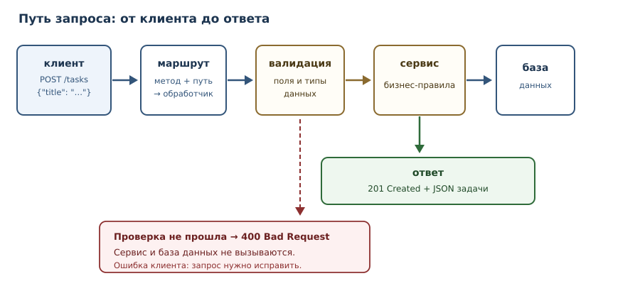
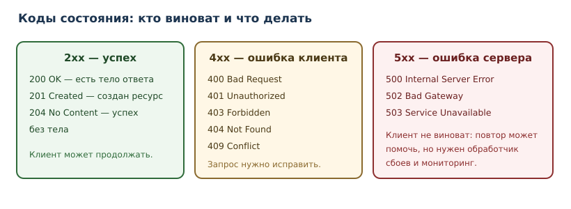

Проект: HTTP API и база данных
Полный проект: REST API, SQLite, валидация запросов, коды состояния, тесты и запуск.
В этой главе
В предыдущем проекте задачи хранились в файле на одной машине. Теперь та же предметная область превращается в HTTP API: клиентом становится программа на другом компьютере, данные хранятся в базе, а запросы приходят одновременно. Это меняет требования: нужны контракт (что и как вызывается), коды состояния, валидация недоверенного ввода и защита от ошибок, которые нельзя показать пользователю.
47.1 Зачем этот проект
API — самая распространённая форма взаимодействия между системами: мобильное приложение общается с сервером, сервисы — друг с другом, скрипты — с внешними платформами. Навык «спроектировать понятный HTTP-интерфейс и не потерять данные при сбоях» универсален: он остаётся, даже если меняется язык или фреймворк.
Проект учит трём вещам, которых не было в CLI:
- Контракт. Клиент не видит ваш код; он видит только URL, методы, коды ответа и формат данных.
- Недоверенный ввод. Всё, что приходит по сети, может быть чем угодно.
- Одновременность и сохранность. База данных, транзакции, блокировки.
47.2 Что должно получиться
REST API для задач:
| Метод и путь | Действие | Успех | Ошибки |
|---|---|---|---|
GET /tasks |
список задач | 200 + массив |
500 |
POST /tasks |
создать задачу | 201 + объект |
400, 422 |
GET /tasks/{id} |
одна задача | 200 + объект |
404 |
PATCH /tasks/{id} |
изменить | 200 + объект |
400, 404, 422 |
DELETE /tasks/{id} |
удалить | 204 без тела |
404 |
Формат задачи: {"id": 1, "title": "Купить хлеб", "done": false}.
Ошибка: {"error": "сообщение"}. Код 422 означает, что тело не прошло
валидацию; 400 — что запрос синтаксически корректен, но противоречит правилам
(например, недопустимый переход состояния).
Нефункциональные требования:
- валидация тела запроса до бизнес-логики;
- параметризованные SQL-запросы (никакой конкатенации);
- понятные коды состояния и отсутствие стектрейсов в ответах;
- тесты на успешные и ошибочные сценарии;
- запуск одной командой и воспроизводимое окружение.
47.3 REST: ресурсы и методы
REST API — стиль, в котором адресами служат ресурсы (/tasks,
/tasks/3), а действие выражается методом HTTP: GET читает, POST
создаёт, PATCH изменяет, DELETE удаляет. Путь описывает что, метод —
что с этим сделать. Такая схема предсказуема: клиент может догадаться об
устройстве API, не читая документацию целиком.
Хороший контракт обладает свойствами:
- ресурсы во множественном числе:
/tasks, а не/getTasks; - никаких глаголов в пути: действие — это метод, а не
/tasks/create; - стабильные идентификаторы:
/tasks/3, а не/tasks?title=...; - одинаковые ошибки: формат
{"error": ...}во всех конечных точках.
Конечная точка (endpoint) — сочетание пути и метода. GET /tasks и
POST /tasks — разные конечные точки с разным поведением.
47.4 Путь запроса

Порядок обработки принципиален:
- Маршрутизация — по методу и пути выбрать обработчик.
- Валидация — проверить, что тело и параметры вообще допустимы.
- Бизнес-логика — применить правила (например, название не пустое).
- Хранилище — прочитать или изменить данные.
- Ответ — сформировать код состояния и тело.
Валидация стоит до бизнес-логики: бессмысленно проверять уникальность
названия, если в поле title пришёл массив. Ранний отказ экономит работу и
упрощает ошибки.
47.5 Коды состояния

Статус ответа (код состояния, HTTP status) — часть контракта, а не украшение. Правила:
2xx— операция выполнена;201при создании ресурса,204при успехе без тела;4xx— клиент ошибся: неверные данные (400), нет ресурса (404), отсутствует или недействительна аутентификация (401), аутентификация есть, но прав нет (403);5xx— ошибся сервер; клиент не должен получать внутренние детали.
Практическая ошибка новичков — возвращать 200 с полем {"error": ...}.
Это ломает клиентов, которые ориентируются на код, и мониторинг, который
считает долю 5xx. Код состояния должен соответствовать смыслу.
47.6 Валидация полезной нагрузки
Полезная нагрузка (payload) — тело запроса. Валидация — первая и самая дешёвая граница между недоверенным миром и вашим кодом; за ней остаются аутентификация, права и ограничения базы.
import json
class ValidationError(Exception):
pass
def parse_task_payload(raw: bytes) -> dict:
try:
data = json.loads(raw)
except json.JSONDecodeError as exc:
raise ValidationError(f"тело запроса не JSON: {exc.msg}") from exc
if not isinstance(data, dict):
raise ValidationError("ожидался объект JSON")
title = data.get("title")
if not isinstance(title, str):
raise ValidationError("поле title обязательно и должно быть строкой")
title = title.strip()
if not title:
raise ValidationError("поле title обязательно и должно быть непустой строкой")
if len(title) > 200:
raise ValidationError("поле title длиннее 200 символов")
done = data.get("done", False)
if not isinstance(done, bool):
raise ValidationError("поле done должно быть true или false")
return {"title": title, "done": done}
cases = [
'{"title": " Купить хлеб "}',
'{"title": ""}',
"[]",
"not json",
'{"title": "Новая", "done": "false"}',
]
for raw in (case.encode("utf-8") for case in cases):
try:
print("ok:", parse_task_payload(raw))
except ValidationError as exc:
print("400:", exc)
ok: {'title': 'Купить хлеб', 'done': False}
400: поле title обязательно и должно быть непустой строкой
400: ожидался объект JSON
400: тело запроса не JSON: Expecting value
400: поле done должно быть true или false
Обратите внимание на порядок: сначала проверяется, что тело вообще
JSON, затем — что это объект, затем — типы полей. Каждая проверка даёт
конкретное сообщение, потому что клиенту нужно понимать, что исправить.
done проверяется через isinstance, а не через bool(...): иначе строка
"false" превратилась бы в True и валидация пропустила бы неверный тип.
47.7 Хранилище: SQLite
SQLite — встроенная база данных: один файл, не нужен сервер. Стандартная
библиотека sqlite3 даёт всё необходимое. Ключевое правило — параметризация
запросов: значения передаются отдельно от текста SQL.
import sqlite3
import tempfile
from pathlib import Path
with tempfile.TemporaryDirectory() as tmp_dir:
db_path = Path(tmp_dir) / "tasks.db"
conn = sqlite3.connect(db_path)
conn.row_factory = sqlite3.Row
conn.execute(
"""
CREATE TABLE tasks (
id INTEGER PRIMARY KEY AUTOINCREMENT,
title TEXT NOT NULL,
done INTEGER NOT NULL DEFAULT 0
)
"""
)
conn.execute("INSERT INTO tasks (title) VALUES (?)", ("Купить хлеб",))
conn.execute("INSERT INTO tasks (title) VALUES (?)", ("Написать главу",))
conn.commit()
for row in conn.execute("SELECT id, title, done FROM tasks ORDER BY id"):
print(dict(row))
conn.close()
{'id': 1, 'title': 'Купить хлеб', 'done': 0}
{'id': 2, 'title': 'Написать главу', 'done': 0}
Параметризация VALUES (?) — не стилистическая мелочь, а защита: значение с
кавычками или ; DROP TABLE tasks останется значением и не станет частью
SQL-кода. Подстановка через f-строку в SQL — учебная ошибка, которая в
промышленном коде называется SQL-инъекцией (глава 36).
Соберём доступ к таблице в репозиторий: HTTP-обработчики будут вызывать его
методы, а не работать с sqlite3 напрямую. Это тот же паттерн «репозиторий» из
главы 44, и он же делает хранилище подменяемым в тестах.
sqlite3.Connection с check_same_thread=False не обеспечивает сериализацию операций между потоками. Для реального FastAPI-приложения используйте управляемые соединения, атомарные транзакции и конкурентные тесты. Официальная документация sqlite3.import sqlite3
import tempfile
from pathlib import Path
class TaskRepository:
def __init__(self, db_path: str | Path) -> None:
self._conn = sqlite3.connect(db_path, check_same_thread=False)
self._conn.row_factory = sqlite3.Row
self._conn.execute(
"""
CREATE TABLE IF NOT EXISTS tasks (
id INTEGER PRIMARY KEY AUTOINCREMENT,
title TEXT NOT NULL,
done INTEGER NOT NULL DEFAULT 0
)
"""
)
self._conn.commit()
def _row(self, row: sqlite3.Row) -> dict:
return {"id": row["id"], "title": row["title"], "done": bool(row["done"])}
def add(self, title: str, done: bool = False) -> dict:
cursor = self._conn.execute(
"INSERT INTO tasks (title, done) VALUES (?, ?)", (title, int(done))
)
self._conn.commit()
task = self.get(cursor.lastrowid)
assert task is not None
return task
def all(self) -> list[dict]:
rows = self._conn.execute("SELECT id, title, done FROM tasks ORDER BY id")
return [self._row(row) for row in rows]
def get(self, task_id: int) -> dict | None:
row = self._conn.execute(
"SELECT id, title, done FROM tasks WHERE id = ?", (task_id,)
).fetchone()
return self._row(row) if row is not None else None
def update(self, task_id: int, title: str, done: bool) -> dict | None:
cursor = self._conn.execute(
"UPDATE tasks SET title = ?, done = ? WHERE id = ?",
(title, int(done), task_id),
)
self._conn.commit()
return self.get(task_id) if cursor.rowcount else None
def delete(self, task_id: int) -> bool:
cursor = self._conn.execute("DELETE FROM tasks WHERE id = ?", (task_id,))
self._conn.commit()
return cursor.rowcount > 0
with tempfile.TemporaryDirectory() as tmp_dir:
repository = TaskRepository(Path(tmp_dir) / "tasks.db")
first = repository.add("Купить хлеб")
repository.add("Написать главу")
print("все:", repository.all())
print("одна:", repository.get(first["id"]))
print("изменена:", repository.update(first["id"], "Купить хлеб и молоко", True))
print("удалена вторая:", repository.delete(2))
print("после удаления:", repository.all())
все: [{'id': 1, 'title': 'Купить хлеб', 'done': False}, {'id': 2, 'title': 'Написать главу', 'done': False}]
одна: {'id': 1, 'title': 'Купить хлеб', 'done': False}
изменена: {'id': 1, 'title': 'Купить хлеб и молоко', 'done': True}
удалена вторая: True
после удаления: [{'id': 1, 'title': 'Купить хлеб и молоко', 'done': True}]
Транзакции: conn.commit() фиксирует изменения, conn.rollback() (или
выход из with conn:) отменяет их. Если создание задачи требует двух
изменений, они должны применяться вместе — иначе база останется в
противоречивом состоянии.
47.8 Обработчик и маршрутизация
Минимальный HTTP-сервер есть в стандартной библиотеке. Он подходит для понимания механизма, но не для промышленной эксплуатации: нет асинхронности, сложной маршрутизации, готовой валидации.
Ниже — server.py; storage.py содержит TaskRepository из предыдущего
раздела, а validation.py — ValidationError и parse_task_payload.
from http.server import BaseHTTPRequestHandler, HTTPServer
import json
from pathlib import Path
from storage import TaskRepository
from validation import ValidationError, parse_task_payload
repository = TaskRepository(Path("tasks.db"))
class TasksHandler(BaseHTTPRequestHandler):
def do_GET(self) -> None:
if self.path == "/tasks":
self._send_json(200, repository.all())
return
task_id = self._task_id()
if task_id is None:
self._send_json(404, {"error": "не найдено"})
return
task = repository.get(task_id)
if task is None:
self._send_json(404, {"error": "задача не найдена"})
else:
self._send_json(200, task)
def do_POST(self) -> None:
if self.path != "/tasks":
self._send_json(404, {"error": "не найдено"})
return
length = int(self.headers.get("Content-Length", "0"))
try:
payload = parse_task_payload(self.rfile.read(length))
except ValidationError as exc:
self._send_json(400, {"error": str(exc)})
return
task = repository.add(payload["title"], payload["done"])
self._send_json(201, task)
def _task_id(self) -> int | None:
prefix = "/tasks/"
if not self.path.startswith(prefix):
return None
raw = self.path[len(prefix):]
return int(raw) if raw.isdigit() else None
def _send_json(self, status: int, body: object) -> None:
data = json.dumps(body, ensure_ascii=False).encode("utf-8")
self.send_response(status)
self.send_header("Content-Type", "application/json; charset=utf-8")
self.send_header("Content-Length", str(len(data)))
self.end_headers()
self.wfile.write(data)
if __name__ == "__main__":
HTTPServer(("127.0.0.1", 8000), TasksHandler).serve_forever()
Для краткости здесь показаны чтение и создание; удаление и изменение удобнее
разобрать на FastAPI, где маршрутизация уже готова. Важно другое: обработчики
вызывают TaskRepository, поэтому данные живут в SQLite, а не в глобальном
списке.
Запуск и проверка:
$ python server.py &
$ sleep 1
$ curl -s http://127.0.0.1:8000/tasks
[{"id": 1, "title": "Купить хлеб", "done": false}]
$ curl -s -X POST http://127.0.0.1:8000/tasks -d '{"title": "Новая"}' -H "Content-Type: application/json"
{"id": 2, "title": "Новая", "done": false}
$ curl -s -o /dev/null -w "%{http_code}\n" -X POST http://127.0.0.1:8000/tasks -d '{"title": ""}'
400
$ kill %1
Сервер занимает терминал, поэтому & отправляет его в фон, а kill %1
останавливает после проверки. Пример запускается отдельно от книги; тесты ниже
проверяют те же обработчики и хранилище без сети.
47.9 Промышленный вариант: FastAPI
Веб-фреймворк берёт на себя маршрутизацию, разбор запросов, сериализацию ответов и валидацию. В Python часто выбирают FastAPI: он использует аннотации типов из главы 31 и автоматически проверяет данные.
Код выше — это модули validation.py (разбор payload) и storage.py
(TaskRepository). Ниже — app.py, который связывает их с HTTP. Тот же
TaskRepository можно подставить в минимальный сервер.
import os
from fastapi import FastAPI, HTTPException, Request, Response
from fastapi.exceptions import RequestValidationError
from fastapi.responses import JSONResponse
from pydantic import BaseModel, Field, field_validator
from storage import TaskRepository
app = FastAPI(title="Tasks API")
repository = TaskRepository(os.environ.get("TASKS_DB", "tasks.db"))
class TaskIn(BaseModel):
title: str = Field(min_length=1, max_length=200)
done: bool = False
@field_validator("title")
@classmethod
def title_must_not_be_blank(cls, value: str) -> str:
value = value.strip()
if not value:
raise ValueError("поле title обязательно")
return value
class TaskPatch(BaseModel):
title: str | None = Field(default=None, min_length=1, max_length=200)
done: bool | None = None
@field_validator("title")
@classmethod
def title_must_not_be_blank(cls, value: str | None) -> str | None:
if value is None:
return None
value = value.strip()
if not value:
raise ValueError("поле title обязательно")
return value
class TaskOut(BaseModel):
id: int
title: str
done: bool
@app.exception_handler(RequestValidationError)
async def validation_handler(request: Request, exc: RequestValidationError) -> JSONResponse:
return JSONResponse(status_code=422, content={"error": "неверные данные запроса"})
@app.get("/tasks", response_model=list[TaskOut])
def list_tasks() -> list[TaskOut]:
return [TaskOut(**task) for task in repository.all()]
@app.post("/tasks", response_model=TaskOut, status_code=201)
def create_task(payload: TaskIn) -> TaskOut:
return TaskOut(**repository.add(payload.title, payload.done))
@app.get("/tasks/{task_id}", response_model=TaskOut)
def get_task(task_id: int) -> TaskOut:
task = repository.get(task_id)
if task is None:
raise HTTPException(status_code=404, detail="задача не найдена")
return TaskOut(**task)
@app.patch("/tasks/{task_id}", response_model=TaskOut)
def update_task(task_id: int, payload: TaskPatch) -> TaskOut:
current = repository.get(task_id)
if current is None:
raise HTTPException(status_code=404, detail="задача не найдена")
title = payload.title if payload.title is not None else current["title"]
done = payload.done if payload.done is not None else current["done"]
changed = repository.update(task_id, title, done)
if changed is None:
raise HTTPException(status_code=404, detail="задача не найдена")
return TaskOut(**changed)
@app.delete("/tasks/{task_id}", status_code=204)
def delete_task(task_id: int) -> Response:
if not repository.delete(task_id):
raise HTTPException(status_code=404, detail="задача не найдена")
return Response(status_code=204)
Что даёт фреймворк:
- валидация тела по типу
TaskIn— автоматически, до вызова функции; 422при неверных данных — автоматически;400— если вы поднимаете его явно для семантических ошибок;- документация API (
/docs) генерируется из типов; - асинхронные обработчики (
async def) — для операций ввода-вывода.
Что остаётся вашей ответственностью: бизнес-логика, транзакции, доступ к данным, аутентификация, обработка исключений и отсутствие утечек внутренних деталей. Фреймворк не проектирует контракт за вас.
47.10 Тесты API
Тестируются три группы сценариев: успех, ошибка клиента, границы.
import os
os.environ["TASKS_DB"] = ":memory:"
from fastapi.testclient import TestClient
from app import app
client = TestClient(app)
def test_create_and_get():
created = client.post("/tasks", json={"title": "Купить хлеб"})
assert created.status_code == 201
task_id = created.json()["id"]
fetched = client.get(f"/tasks/{task_id}")
assert fetched.status_code == 200
assert fetched.json()["title"] == "Купить хлеб"
def test_list_contains_created_task():
created = client.post("/tasks", json={"title": "В списке"}).json()
listed = client.get("/tasks")
assert listed.status_code == 200
assert any(task["id"] == created["id"] for task in listed.json())
def test_patch_changes_title_and_done():
created = client.post("/tasks", json={"title": "Черновик"}).json()
changed = client.patch(
f"/tasks/{created['id']}", json={"title": "Готово", "done": True}
)
assert changed.status_code == 200
assert changed.json()["title"] == "Готово"
assert changed.json()["done"] is True
def test_empty_title_rejected():
response = client.post("/tasks", json={"title": ""})
assert response.status_code == 422
def test_too_long_title_rejected():
response = client.post("/tasks", json={"title": "я" * 201})
assert response.status_code == 422
def test_unknown_task_returns_404():
assert client.get("/tasks/999999").status_code == 404
def test_delete_returns_204():
created = client.post("/tasks", json={"title": "временная"}).json()
response = client.delete(f"/tasks/{created['id']}")
assert response.status_code == 204
assert client.get(f"/tasks/{created['id']}").status_code == 404
$ python -m pytest -q
....... [100%]
7 passed in 0.31s
47.11 Безопасность и типичные ошибки
- Конкатенация SQL. Приводит к SQL-инъекции; только параметры.
- Возврат стектрейса клиенту. Раскрывает устройство системы; логируйте
внутри, отдавайте нейтральное сообщение и
500. 200вместо4xx/5xx. Ломает клиентов и мониторинг.- Доверие к
Content-Lengthбез ограничения. Огромное тело может исчерпать память; нужен лимит. - Отсутствие таймаутов. Внешний вызов без таймаута подвешивает сервер.
- Секреты в коде. Только переменные окружения или хранилище секретов.
- Изменяемое глобальное состояние вместо базы.
TASKS = [...]из первых версий примера — учебное упрощение: после перезапуска данные исчезнут. В собранном варианте состояние живёт в SQLite и переживает перезапуск.
47.12 Упражнения
1. Контракт API
Опишите таблицей контракт для ресурса notes: методы, пути, коды ответов,
формат ошибок. Почему GET /notes/3 лучше, чем GET /notes?id=3?
2. Валидация
Добавьте в parse_task_payload проверку необязательного поля priority со
значениями low, normal, high. Какое значение использовать по умолчанию и
какой код вернуть при неверном?
3. Коды состояния
Для каждой ситуации укажите код: (а) задача создана; (б) задачи с таким id
нет; (в) тело запроса — не JSON; (г) база недоступна; (д) удаление прошло
успешно.
4. SQL-инъекция
Объясните, почему "SELECT * FROM tasks WHERE title = '" + title + "'" опасно.
Приведите пример вредоносного title и покажите, как параметризация решает
проблему.
5. Транзакции
Создание задачи пишет запись в tasks и в history. Что произойдёт без
транзакции, если вторая запись упадёт? Как исправить?
6. Тесты ошибок
Напишите тесты для: пустого title, слишком длинного title, несуществующего
id, неверного JSON. Какие коды ожидаются?
7. Ограничение размера
Предложите способ ограничить размер тела запроса. Что вернуть клиенту при превышении?
8. Ошибки без утечек
Сервер получил исключение из базы. Что записать в лог и что вернуть клиенту? Почему нельзя вернуть текст исключения?
9. Пагинация
Добавьте limit и offset в GET /tasks. Какие значения по умолчанию
разумны и как ограничить максимум?
10. Мини-релиз API
Опишите шаги выпуска API-версии 1.0.0: тесты, миграции базы, конфигурация,
мониторинг, план отката. Что должно быть зелёным до публикации?
47.13 Проверка понимания
- Что такое REST и почему путь описывает ресурс, а метод — действие?
- Чем конечная точка отличается от ресурса?
- Почему валидация должна выполняться до бизнес-логики?
- Чем
4xxотличается от5xxи почему это важно для мониторинга? - Почему параметризация SQL обязательна?
- Что даёт веб-фреймворк и что остаётся ответственностью разработчика?
- Почему нельзя возвращать клиенту стектрейс?
47.14 Что дальше
API работает, но каждый запрос обрабатывается в одном потоке, а внешние сервисы отвечают медленно. Последний проект — асинхронный сборщик данных: конкурентные запросы, ограничение параллелизма и частоты, повторы с задержкой и наблюдаемость.